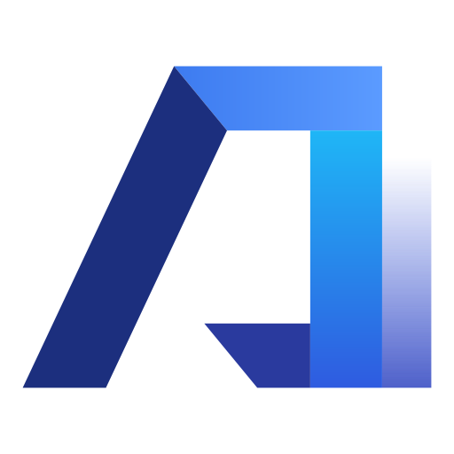
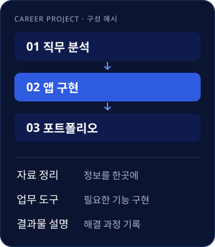
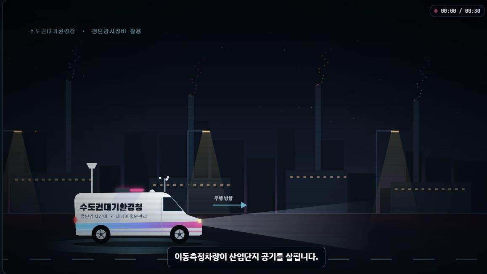

AI STRATEGY LAB
실무에 쓰는 AI,직접 만드는 경험.
공공기관 AI 교육과 실무 저술을 바탕으로,
일과 일상에 필요한 AI 활용 방법을 함께 탐구합니다.
이선영 소장·신현준 소장
질문과 자료를, 내 업무의 결과물로.공공기관 AI 교육실무 중심 저술앱 · 웹 · 영상 프로젝트
EDUCATION
실무 중심
AI 강의.
실제 업무 과제를 바탕으로 배우고, 직접 실습하고, 결과물을 검토합니다. 교육 대상과 업무 환경에 맞춰 난이도와 주제를 구성합니다.
공공기관 AI 강의 경험을 바탕으로 진행합니다.
01AI 기본
생성형 AI의 이해, 주요 도구 사용법과 안전한 활용. 처음 접하는 분도 시작할 수 있도록 안내합니다.
AI 활용
문서 작성, 자료 조사, 콘텐츠 제작과 프롬프트 실습. 일과 일상에 바로 연결되는 활용법을 다룹니다.
업무 특화
공공행정·기획·홍보 등 담당 업무에 맞춘 사례와 실습. 실제 업무 흐름에 AI를 적용하는 방법을 함께 찾습니다.
- 01업무 과제 이해목적과 자료를 살펴보고
- 02AI 활용 실습내 업무에 직접 적용하고
- 03검토와 개선결과를 확인하며 다듬습니다
PROJECTS
배움을 넘어,
직접 만드는 경험.
취업용 앱·웹사이트·영상의 기획과 제작을 함께합니다.
목적과 사용 환경에 맞춰 필요한 범위를 정합니다.
VIBE CODING & PORTFOLIO
바이브코딩으로 만드는
취업용 앱.
지원 직무에 맞는 앱을 직접 만들고, 제작 과정과 활용 방법을 설명할 수 있도록 함께합니다.
- 직무·채용 공고에 맞춘 주제 기획
- 웹앱 구현과 배포·소스·설명 자료 정리
- 포트폴리오 구성과 면접 설명 준비

WEB DESIGN & DEVELOPMENT
웹사이트·홈페이지
기관과 브랜드의 이야기를 정리하고,
방문자가 필요한 정보를 쉽게 찾는 화면을 만듭니다.
- 브랜드·기관 소개, 서비스·갤러리와 업무·교육 콘텐츠
- 모바일·태블릿·PC에 맞춘 반응형 화면
- 카카오톡·전화·지도·SNS 연결
- 검색·공유 기본 정보 설정, 배포 주소와 소스 전달
AI VIDEO & CONTENT
AI 영상·교육 콘텐츠
기관·브랜드 소개 영상부터, 업무의 원리와 절차를 설명하는 교육용 애니메이션과 인터랙티브 페이지까지 함께 기획합니다.
- 시나리오·대사와 AI 이미지·음성 연출
- 단계별 애니메이션과 장면 선택·자막·음성 해설
- 사용 채널과 길이에 맞춘 편집
프로젝트 진행 방식 ＋
- 목적과 범위 정리대상, 필요한 내용과 기능, 준비된 자료를 함께 확인합니다.
- 시안 확인과 제작구성과 방향을 확인하고, 실제 결과물을 보며 다듬습니다.
- 공개와 활용 안내배포·파일 전달·활용 방법을 프로젝트에 맞춰 정리합니다.
기존 제작 사례 살펴보기 ↗INTERACTIVE LEARNING · 제작 사례
복잡한 업무를,
눈에 보이는 흐름으로.
업무의 원리와 절차를 짧은 애니메이션으로 풀어내고, 필요한 장면을 직접 선택해 살펴보는 교육 콘텐츠를 만듭니다.
- 부서·주제별로 나눠 찾아보는 업무 소개
- 원리와 과정을 보여주는 단계별 애니메이션
- 장면 선택·자막·음성 해설과 모바일 화면
기관 업무 안내 · 직원 교육 · 강의와 발표 자료

실제 콘텐츠 열기 ↗수도권대기환경청 업무 교육 콘텐츠부서별 업무 · 30초 애니메이션 · 장면 선택
현장에서 다룬 AI 활용법을 책으로 정리합니다.
기초·실무·일상·어린이 교육을 다룬 8권의 저서.
전체 저서 살펴보기 ↗